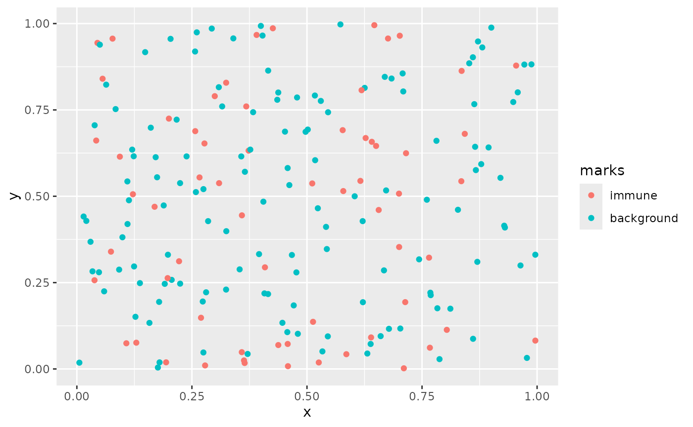

my-vignette
my-vignette.Rmd
library(kperm)
#library(devtools)
library(tidyverse)
#> ── Attaching core tidyverse packages ──────────────────────── tidyverse 2.0.0 ──
#> ✔ dplyr 1.1.4 ✔ readr 2.1.5
#> ✔ forcats 1.0.0 ✔ stringr 1.5.1
#> ✔ ggplot2 3.5.2 ✔ tibble 3.2.1
#> ✔ lubridate 1.9.4 ✔ tidyr 1.3.1
#> ✔ purrr 1.0.4
#> ── Conflicts ────────────────────────────────────────── tidyverse_conflicts() ──
#> ✖ dplyr::filter() masks stats::filter()
#> ✖ dplyr::lag() masks stats::lag()
#> ℹ Use the conflicted package (<http://conflicted.r-lib.org/>) to force all conflicts to become errors
library(spatstat.random)
#> Loading required package: spatstat.data
#> Loading required package: spatstat.univar
#> spatstat.univar 3.1-2
#> Loading required package: spatstat.geom
#> spatstat.geom 3.3-6
#> spatstat.random 3.3-3
#devtools::load_all()
set.seed(50)Univariate
Simulating
sim_data <- sim_pp_data(lambda_n = 200,
abundance = 0.3,
cell_type1 = "immune",
cell_type2 = "background",
distribution = "hom",
clust = FALSE)
marksvar = "immune"
rvalues = seq(0, 1, length.out = 50)
#w = convexhull.xy(ovarian[["x"]], ovarian[["y"]])
# define pp_obj
# pp_obj = ppp(ovarian[["x"]], ovarian[["y"]], window = w, marks = ovarian[[marksvar]])
pp_obj <- sim_data
df_back <- as.data.frame(pp_obj) %>%
as_tibble()
df_back
#> # A tibble: 199 × 3
#> x y marks
#> <dbl> <dbl> <fct>
#> 1 0.435 0.779 background
#> 2 0.324 0.230 background
#> 3 0.861 0.902 background
#> 4 0.0842 0.752 background
#> 5 0.930 0.410 background
#> 6 0.200 0.725 immune
#> 7 0.625 0.814 background
#> 8 0.275 0.0477 background
#> 9 0.180 0.0191 background
#> 10 0.194 0.0192 immune
#> # ℹ 189 more rows
as_tibble(pp_obj) %>%
ggplot(aes(x,y, color = marks)) +
geom_point()
Expectation
kamp_expec = kamp_expectation(ppp_obj = pp_obj,
rvec = rvalues,
markvar = marksvar,
thin_pct = 0.75) %>%
mutate(og_fundiff = k - theo_csr,
method = "kamp") %>%
drop_na()
kamp_expec
#> # A tibble: 35 × 7
#> r k theo_csr kamp_csr kamp_fundiff og_fundiff method
#> <dbl> <dbl> <dbl> <dbl> <dbl> <dbl> <chr>
#> 1 0 0 0 0 0 0 kamp
#> 2 0.0204 0.00152 0.00131 0.00171 -0.000191 0.000207 kamp
#> 3 0.0408 0.00563 0.00523 0.00524 0.000391 0.000400 kamp
#> 4 0.0612 0.00989 0.0118 0.0107 -0.000843 -0.00189 kamp
#> 5 0.0816 0.0192 0.0209 0.0191 0.0000123 -0.00179 kamp
#> 6 0.102 0.0320 0.0327 0.0313 0.000739 -0.000678 kamp
#> 7 0.122 0.0464 0.0471 0.0462 0.000197 -0.000678 kamp
#> 8 0.143 0.0630 0.0641 0.0626 0.000476 -0.00109 kamp
#> 9 0.163 0.0832 0.0837 0.0811 0.00216 -0.000510 kamp
#> 10 0.184 0.110 0.106 0.103 0.00625 0.00362 kamp
#> # ℹ 25 more rows
kamp_expec_mat = kamp_expectation_mat(ppp_obj = pp_obj,
rvec = rvalues,
markvar = marksvar) %>%
drop_na()
kamp_expec_mat
#> # A tibble: 50 × 5
#> r k theo_csr kamp_csr kamp_fundiff
#> <dbl> <dbl> <dbl> <dbl> <dbl>
#> 1 0 0 0 0 0
#> 2 0.0204 0.00152 0.00131 0.00171 -0.000191
#> 3 0.0408 0.00563 0.00523 0.00524 0.000391
#> 4 0.0612 0.00989 0.0118 0.0107 -0.000843
#> 5 0.0816 0.0192 0.0209 0.0191 0.0000123
#> 6 0.102 0.0320 0.0327 0.0313 0.000739
#> 7 0.122 0.0464 0.0471 0.0462 0.000197
#> 8 0.143 0.0630 0.0641 0.0626 0.000476
#> 9 0.163 0.0832 0.0837 0.0811 0.00216
#> 10 0.184 0.110 0.106 0.103 0.00625
#> # ℹ 40 more rowsVariance
kamp_var = kamp_variance(ppp_obj = pp_obj,
rvec = rvalues,
markvar = marksvar) %>%
drop_na()
kamp_var
#> # A tibble: 49 × 7
#> r k theo_csr kamp_csr var z pvalue
#> <dbl> <dbl> <dbl> <dbl> <dbl> <dbl> <dbl>
#> 1 0.0204 0.00152 0.00131 0.00171 0.000000744 -0.221 0.588
#> 2 0.0408 0.00563 0.00523 0.00524 0.00000229 0.258 0.398
#> 3 0.0612 0.00989 0.0118 0.0107 0.00000435 -0.404 0.657
#> 4 0.0816 0.0192 0.0209 0.0191 0.00000804 0.00432 0.498
#> 5 0.102 0.0320 0.0327 0.0313 0.0000152 0.189 0.425
#> 6 0.122 0.0464 0.0471 0.0462 0.0000230 0.0411 0.484
#> 7 0.143 0.0630 0.0641 0.0626 0.0000358 0.0795 0.468
#> 8 0.163 0.0832 0.0837 0.0811 0.0000513 0.302 0.381
#> 9 0.184 0.110 0.106 0.103 0.0000709 0.742 0.229
#> 10 0.204 0.135 0.131 0.129 0.000101 0.577 0.282
#> # ℹ 39 more rowsBivariate
Simulating
sim_data_biv <- sim_pp_data_biv(lambda_n = 200,
abundance = 0.3,
cell_type1 = "immune1",
cell_type2 = "immune2",
cell_type3 = "background",
distribution = "inhom",
clust = TRUE)
#> Computing probability for Cell 1
#> Computing probability for Cell 2
#> Computing hole probability
marksvar = "immune"
rvalues = seq(0, 1, length.out = 50)
pp_obj <- sim_data_biv
df_back <- as.data.frame(pp_obj) %>%
as_tibble()
df_back
#> # A tibble: 180 × 3
#> x y marks
#> <dbl> <dbl> <fct>
#> 1 4.07 0.690 background
#> 2 6.84 8.71 immune2
#> 3 0.565 8.65 immune2
#> 4 5.13 1.18 immune2
#> 5 1.13 9.50 background
#> 6 1.15 9.23 immune2
#> 7 8.35 6.15 background
#> 8 5.15 1.42 background
#> 9 8.37 4.02 immune1
#> 10 9.39 4.80 immune1
#> # ℹ 170 more rows
as_tibble(pp_obj) %>%
ggplot(aes(x,y, color = marks)) +
geom_point()
Expectation
kamp_expec_biv = kamp_expectation_biv(ppp_obj = pp_obj,
rvec = rvalues,
#markvar = marksvar,
thin_pct = 0.5) %>%
drop_na()
kamp_expec_biv
#> # A tibble: 50 × 5
#> r k theo_csr kamp_csr kamp_fundiff
#> <dbl> <dbl> <dbl> <dbl> <dbl>
#> 1 0 0 0 0 0
#> 2 0.0204 0 0.00131 0 0
#> 3 0.0408 0 0.00523 0 0
#> 4 0.0612 0 0.0118 0 0
#> 5 0.0816 0 0.0209 0 0
#> 6 0.102 0.554 0.0327 0.0258 0.529
#> 7 0.122 0.554 0.0471 0.0258 0.529
#> 8 0.143 0.554 0.0641 0.0258 0.529
#> 9 0.163 0.554 0.0837 0.0258 0.529
#> 10 0.184 0.554 0.106 0.0780 0.477
#> # ℹ 40 more rows
kamp_expec_biv_mat = kamp_expectation_biv_mat(ppp_obj = pp_obj,
rvec = rvalues) %>%
drop_na()
kamp_expec_biv_mat
#> # A tibble: 50 × 5
#> r k theo_csr kamp_csr kamp_fundiff
#> <dbl> <dbl> <dbl> <dbl> <dbl>
#> 1 0 0 0 0 0
#> 2 0.0204 0 0.00131 0.00622 -0.00622
#> 3 0.0408 0 0.00523 0.00622 -0.00622
#> 4 0.0612 0 0.0118 0.00622 -0.00622
#> 5 0.0816 0 0.0209 0.0188 -0.0188
#> 6 0.102 0.125 0.0327 0.0250 0.0996
#> 7 0.122 0.125 0.0471 0.0439 0.0807
#> 8 0.143 0.375 0.0641 0.0755 0.300
#> 9 0.163 0.627 0.0837 0.113 0.513
#> 10 0.184 0.753 0.106 0.164 0.589
#> # ℹ 40 more rowsVariance
kamp_biv_var = kamp_variance_biv(ppp_obj = pp_obj,
rvec = rvalues) %>%
drop_na()
kamp_biv_var
#> # A tibble: 49 × 7
#> r k theo_csr kamp_csr var z pvalue
#> <dbl> <dbl> <dbl> <dbl> <dbl> <dbl> <dbl>
#> 1 0.0204 0 0.00131 0.00622 0.000731 -0.230 0.591
#> 2 0.0408 0 0.00523 0.00622 0.000731 -0.230 0.591
#> 3 0.0612 0 0.0118 0.00622 0.000731 -0.230 0.591
#> 4 0.0816 0 0.0209 0.0188 0.00220 -0.400 0.655
#> 5 0.102 0.125 0.0327 0.0250 0.00293 1.84 0.0330
#> 6 0.122 0.125 0.0471 0.0439 0.00513 1.13 0.130
#> 7 0.143 0.375 0.0641 0.0755 0.00889 3.18 0.000742
#> 8 0.163 0.627 0.0837 0.113 0.0136 4.40 0.00000538
#> 9 0.184 0.753 0.106 0.164 0.0199 4.18 0.0000148
#> 10 0.204 0.880 0.131 0.177 0.0217 4.77 0.000000916
#> # ℹ 39 more rowswtf
win <- owin(c(0, 1), c(0, 1))
pp <- rpoispp(lambda = 100, win = win)
marks <- sample(c("immune1", "immune2", "background"), pp$n, replace = TRUE)
marked_pp <- ppp(pp$x, pp$y, window = win, marks = factor(marks))
result <- kamp_variance_biv(marked_pp, markvar1 = "immune1", markvar2 = "immune2")
result
#> # A tibble: 6 × 7
#> r k theo_csr kamp_csr var z pvalue
#> <dbl> <dbl> <dbl> <dbl> <dbl> <dbl> <dbl>
#> 1 0 0 0 0 0 NaN NaN
#> 2 0.05 0.00713 0.00785 0.00801 0.0000167 -0.215 0.585
#> 3 0.075 0.0218 0.0177 0.0180 0.0000404 0.604 0.273
#> 4 0.1 0.0371 0.0314 0.0292 0.0000660 0.976 0.165
#> 5 0.15 0.0829 0.0707 0.0777 0.000186 0.377 0.353
#> 6 0.2 0.147 0.126 0.132 0.000351 0.759 0.224
print(names(result))
#> [1] "r" "k" "theo_csr" "kamp_csr" "var" "z" "pvalue"move helpers to utils file
no need for timing stuff think abt user facing stuff 10000 cells use border correction thinning percentage = 0 whole separate function for bivariate unit tests with small spatstat generated datasets https://github.com/julia-wrobel/registr/blob/master/R/register_fpca.R (documentation example)
SIMULATION SETUP: can compare traditional K (trans border correction), with Kinhom, Kperm (with 100 permutations), and KAMP
images should be: random, clustered, and inhomogenous (generate and show images)
4 nulls total: 2 null: NO CLUSTERING and CLUSTERING within each, have homogenous and inhomogenous background
Varied rate of total cells (n) and immune cell abundance (p) n ∈(100, 500, 1000) # maybe tweak bc i decreased p ∈(0.1, 0.3, 0.5)
3*3 = 9 images for each subset null hypothesis so 9x4 = 36 total, assuming im avging for the barplots and stuff?
Compare: accuracy (bar plots of fundiff and should be centered at 0) and computation time
can also compare power and type I error # yah idk how i can compare ? if fundiff > 0 thats clustering? are we getting the variance for the perm and KAMP dist and comparing CIs?? need to look at the code
for building site https://pkgdown.r-lib.org/ pkgdown::build_site()
devtools::document() devtools::install() devtools::build_vignettes()
TESTING
usethis::use_test(“name of test”) devtools::test()